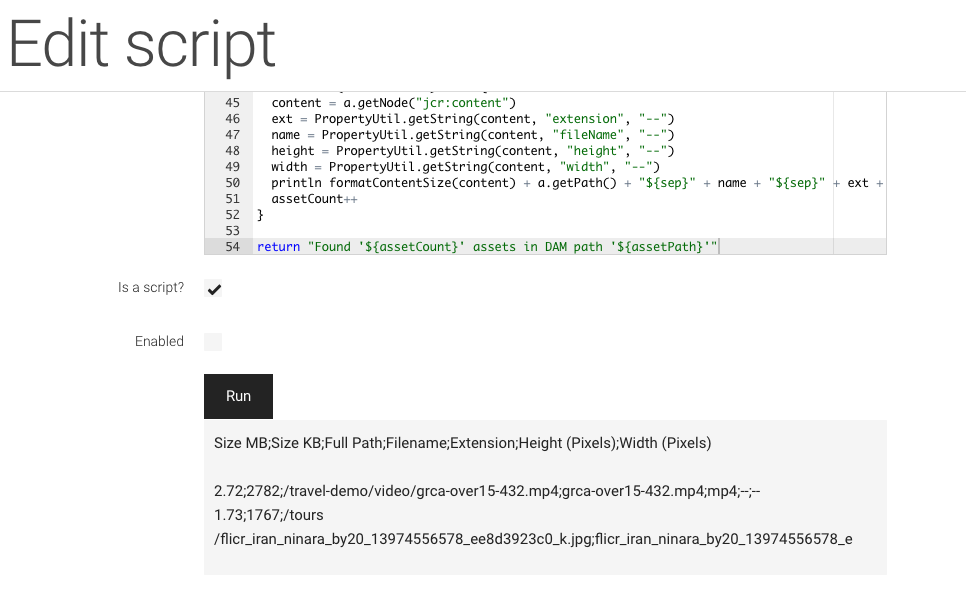
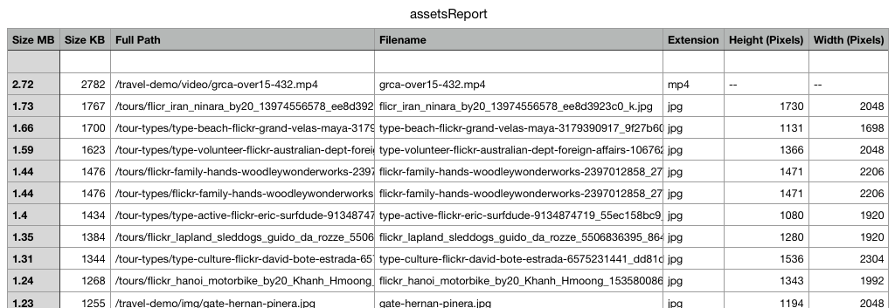

Create a report showing asset sizes in Magnolia DAM with Groovy
Sometimes editors want to know where big assets are “hidden” in Magnolia DAM. For a project, I quickly created a Groovy script for creating a report listing assets ordered by size. I used Magnolia's Groovy App to develop and test the script:

Groovy script
import javax.jcr.PropertyIterator
import javax.jcr.Property
import java.text.NumberFormat
import java.text.DecimalFormat
import org.apache.commons.lang3.StringUtils
def assetPath = "/"
session = MgnlContext.getJCRSession('dam')
root = session.getNode(assetPath)
// sep char for importing into Numbers / Excel
sep = ";"
numberPatternMB = "###.##"
numberPatternKB = "###"
assetCount = 0
def sortFunction = {a, b ->
def aAssetSize = PropertyUtil.getLong(a.getNode("jcr:content"), "size")
def bAssetSize = PropertyUtil.getLong(b.getNode("jcr:content"), "size")
return bAssetSize.compareTo(aAssetSize)
}
assets = NodeUtil.collectAllChildren(root).findAll { n ->
n.getProperty("jcr:primaryType").getString() == 'mgnl:asset' && n.hasNode("jcr:content") && n.getNode("jcr:content").hasProperty("size")
}
def formatContentSize(content) {
fileSizeInBytes = PropertyUtil.getLong(content, "size")
fileSizeInKB = fileSizeInBytes / 1024;
fileSizeInMB = fileSizeInKB / 1024;
sizeMB = StringUtils.replace(new DecimalFormat(numberPatternMB).format(fileSizeInMB), ",", ".")
sizeKB = StringUtils.replace(new DecimalFormat(numberPatternKB).format(fileSizeInKB), ",", ".")
return sizeMB + "${sep}" + sizeKB + "${sep}"
}
println "Size MB${sep}Size KB${sep}Full Path${sep}Filename${sep}Extension${sep}Height (Pixels)${sep}Width (Pixels)\n"
// display report
assets.sort(sortFunction).each { a ->
content = a.getNode("jcr:content")
ext = PropertyUtil.getString(content, "extension", "--")
name = PropertyUtil.getString(content, "fileName", "--")
height = PropertyUtil.getString(content, "height", "--")
width = PropertyUtil.getString(content, "width", "--")
println formatContentSize(content) + a.getPath() + "${sep}" + name + "${sep}" + ext + "${sep}" + height + "${sep}" + width
assetCount++
}
return "Found '${assetCount}' assets in DAM path '${assetPath}'"
You can adapt the code as needed.
Note
I used a semicolon as column delimiter, as this is the usual default in Switzerland. In Switzerland, number decimals are separated with a point and not with a comma, as in Germany.
After execution, you can copy & paste the result into the text editor of choice and save the file as text with .csv ending to disk and open it with your preferred spreadsheet application:

Now you are free to add some nice colors and formatting and hand the spreadsheet to your internal or external client…